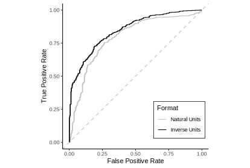

This blog will be dedicated to the {rtichoke} package, which means that it will contain posts that are related to performance metrics and the possible related usability of {rtichoke}.
To make the package easier to use I plan to reproduce other people’s code with rtichoke, posts of this kind will be available under the category “replications”.
My first choice is to replicate the first example from the book “Feature Engineering and Selection: A Practical Approach for Predictive Models by Max Kuhn and Kjell Johnson”.
In this example you can see how Box-Cox transformation improves the discrimination capability of the logistic regression model without using any additional information.
The code is almost identical to the original code that can be found on github.
library(caret)
library(tidymodels)
library(ggplot2)
data(segmentationData)
segmentationData <-
segmentationData %>%
dplyr::select(EqSphereAreaCh1, PerimCh1, Class, Case) %>%
setNames(c("PredictorA", "PredictorB", "Class", "Case")) %>%
mutate(Class = factor(ifelse(Class == "PS", "One", "Two")))
example_train <-
segmentationData %>%
dplyr::filter(Case == "Train") %>%
dplyr::select(-Case)
example_test <-
segmentationData %>%
dplyr::filter(Case == "Test") %>%
dplyr::select(-Case)example_ctrl <-
trainControl(method = "none",
classProbs = TRUE,
summaryFunction = twoClassSummary)
natural_terms <- train(Class ~ PredictorA + PredictorB,
data = example_train,
method = "glm",
metric = "ROC",
trControl = example_ctrl)
trans_terms <- train(Class ~ PredictorA + PredictorB,
data = example_train,
method = "glm",
preProc = "BoxCox",
metric = "ROC",
trControl = example_ctrl)natural_dat <-
example_test %>%
mutate(
prob = predict(natural_terms, example_test, type = "prob")[,1]) %>%
roc_curve(Class, prob) %>%
mutate(Format = "Natural Units")
trans_dat <-
example_test %>%
mutate(
prob = predict(trans_terms, example_test, type = "prob")[,1]) %>%
roc_curve(Class, prob) %>%
mutate(Format = "Inverse Units")
both_dat <-
bind_rows(natural_dat, trans_dat) %>%
mutate(
Format = factor(Format, levels = c("Natural Units", "Inverse Units")))
trans_roc_plot <-
ggplot(both_dat) +
geom_step(aes(x = 1 - specificity, y = sensitivity, color = Format)) +
coord_equal() +
xlab("False Positive Rate") +
ylab("True Positive Rate") +
theme(legend.position = c(.8, .2)) +
scale_colour_manual(
values = c("Natural Units" = "grey",
"Inverse Units" = "black")) +
geom_abline(intercept = 0, slope = 1, col = "grey", lty = 2) +
theme_classic()
trans_roc_plot
<div class="panel-name">By Probability Threshold</div>library(rtichoke)
create_roc_curve(
probs = list(
"Natural Units" = predict(natural_terms,
example_test, type = "prob")[,1],
"Inverse Units" = predict(trans_terms,
example_test, type = "prob")[,1]
),
reals = list(example_test$Class == "One"),
size = 400,
col_values = c("grey", "black")
) <div class="panel-name">By Percent Positives Conditional Rate</div>library(rtichoke)
create_roc_curve(
probs = list(
"Natural Units" = predict(natural_terms,
example_test, type = "prob")[,1],
"Inverse Units" = predict(trans_terms,
example_test, type = "prob")[,1]
),
reals = list(example_test$Class == "One"),
stratified_by = "ppcr",
size = 400,
col_values = c("grey", "black")
)